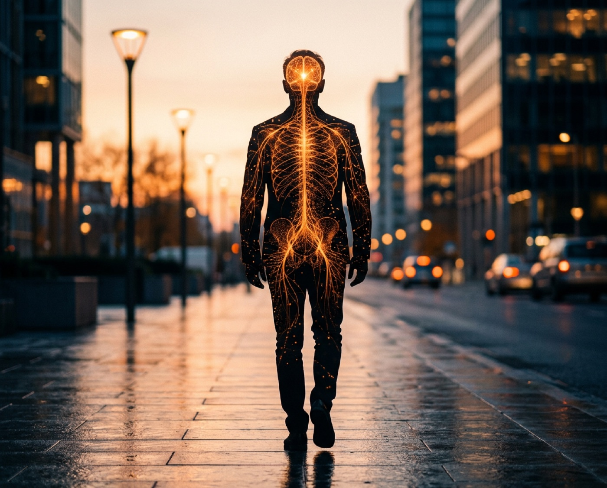
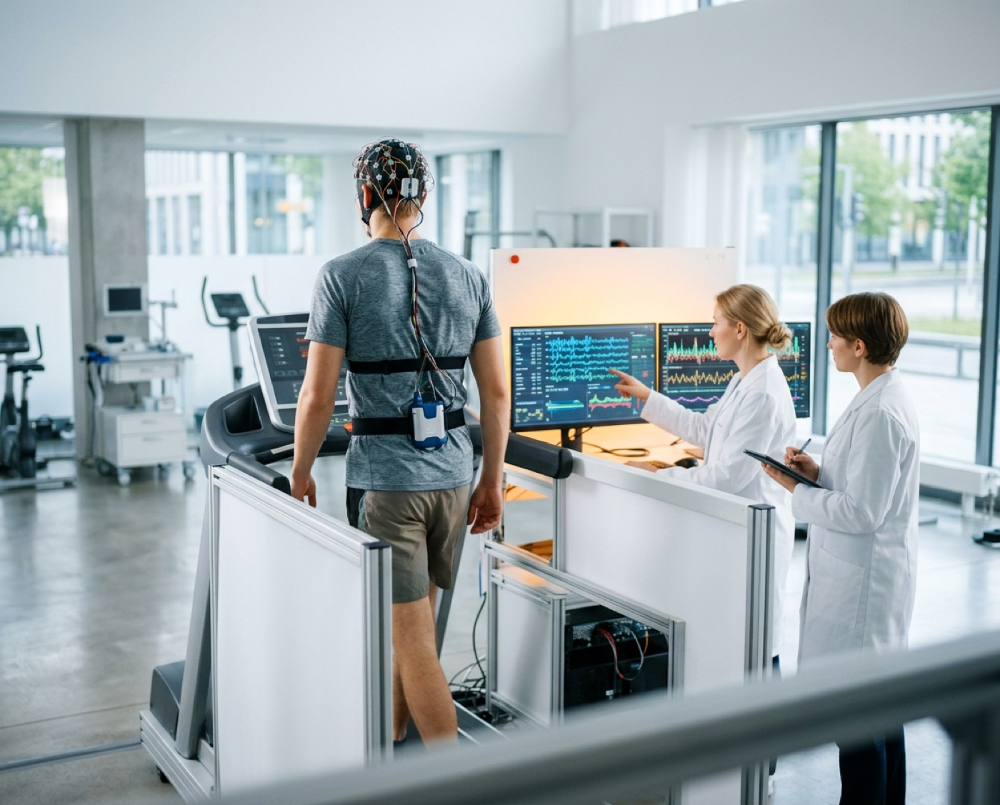
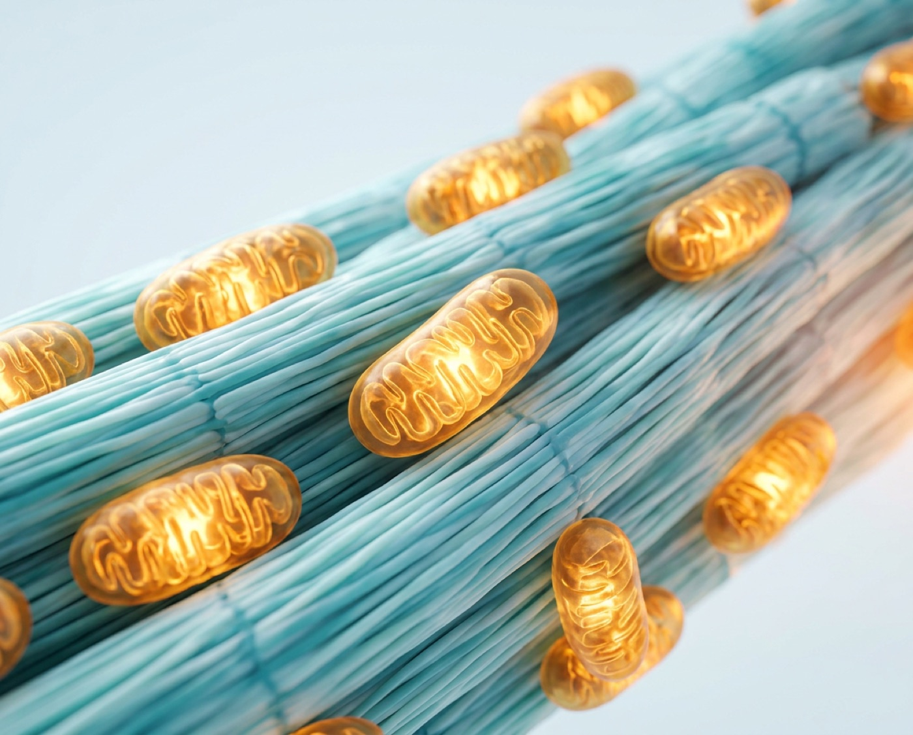
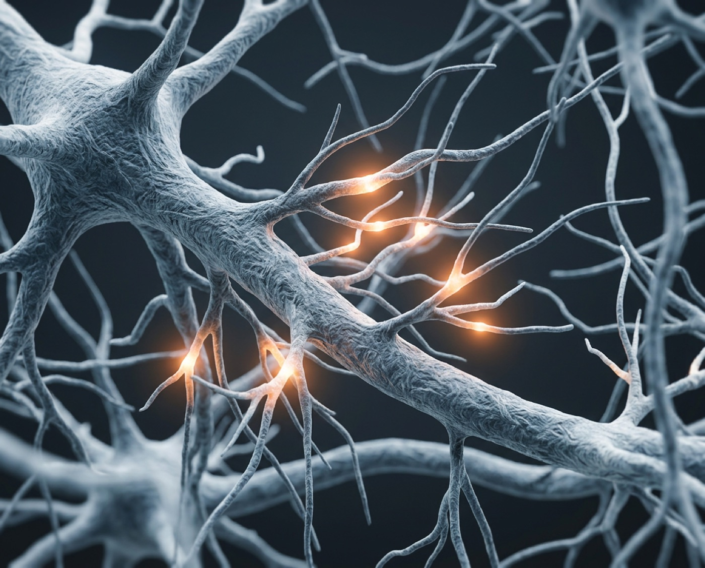
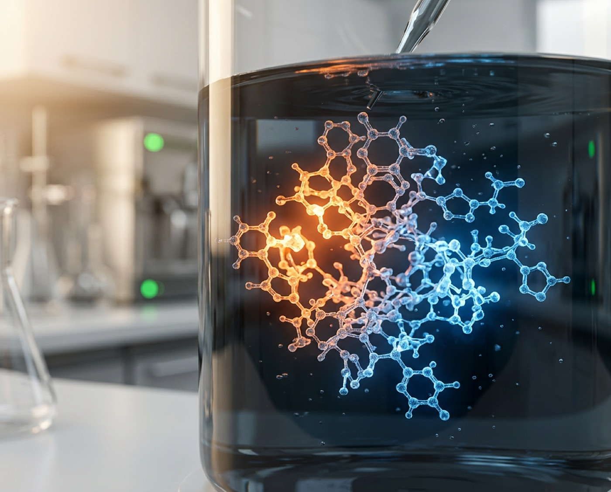
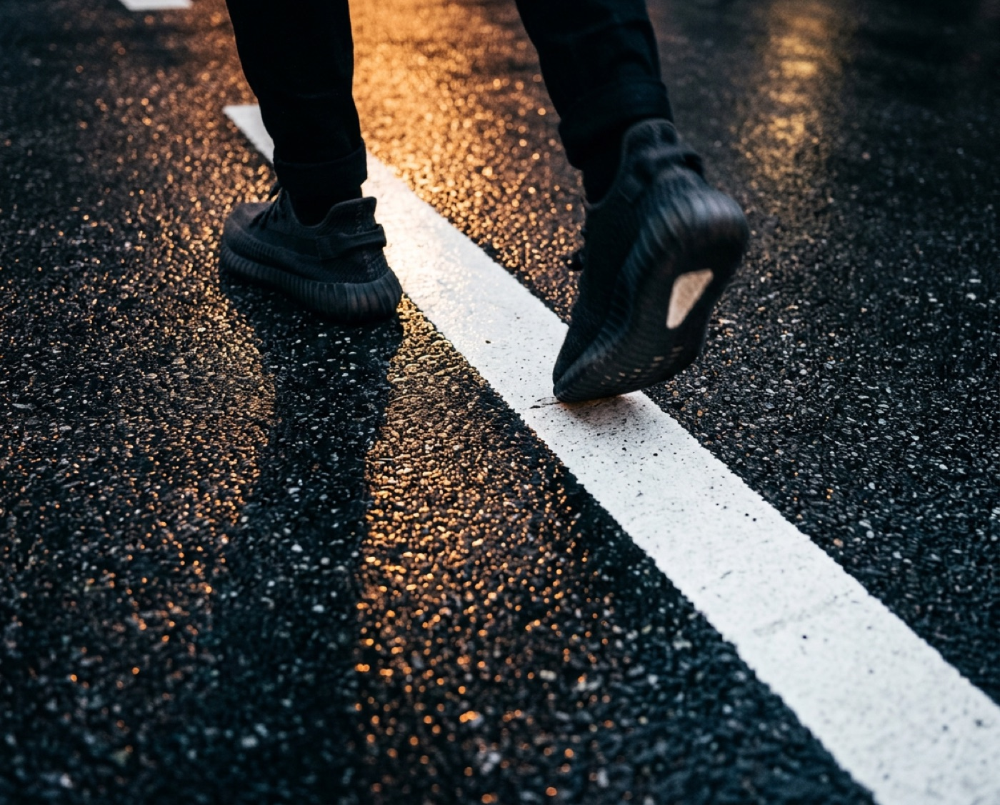

Аристотель учил своих учеников на ходу.
Его школу так и назвали: перипатетики, «прогуливающиеся». Ницше писал, что все истинно великие мысли приходят во время ходьбы. Дарвин каждый день ходил по одной и той же тропе, когда думал над теорией. Стив Джобс вёл важнейшие переговоры шагая, а не за столом. Кьеркегор признавался, что вышагал свои лучшие мысли.
Столетиями лучшие умы уходили думать на своих двоих – и возвращались с тем, что переворачивало науку, книги, целые компании. Слова «нейробиология» они не знали. Они просто чувствовали то, что теперь измеряют приборами: стоит телу пойти – и внутри следом приходит в движение что-то ещё.
«Все истинно великие мысли приходят во время ходьбы».
Вспомните, где к вам приходят самые ясные мысли и неожиданные решения. Почти никогда не за рабочим столом, где их часами выжимают. А тогда, когда вы встали и пошли – в душе, за рулём, по дороге домой. Тело сдвинулось – и то, что было наглухо закрыто, вдруг приоткрылось.
Через пару экранов станет ясно, как это связано с деньгами, целями и тем масштабом, до которого годами не выходит дотянуться. Но сначала о самой ходьбе, и это та часть, в которую труднее всего поверить.

Начнём с того, во что трудно поверить
За последние пятнадцать лет ходьбу проверили на десятках тысяч людей, на снимках мозга и в цифрах, которые звучат почти невероятно. Вот только заработать на ней нельзя. Ходьбу не разлить по капсулам, не запатентовать и не продать в аптеке – поэтому о её настоящей силе говорят куда тише, чем она заслуживает.
Ходьба – единственное действие, которое делает сразу пять вещей, и каждая тянет на отдельное открытие. Она заметно продлевает жизнь. Наполняет тело энергией на уровне клеток. Физически растит мозг. Гасит тревогу там, где та рождается. И резко поднимает способность находить решения.
Ни спорт, ни одна таблетка, ни один курс медитации не дают всё это разом. А ходьба даёт – бесплатно, и это умеет каждый. Древний код, зашитый в самом теле, – и почти всеми забытый.
Дальше – только исследования и цифры. По порядку: каждое следующее сильнее предыдущего.
Ни одно лекарство не работает так широко
В июле 2025 года в The Lancet Public Health вышел крупнейший на сегодня анализ: 57 исследований, больше 160 000 человек. Учёные сравнили тех, кто проходит около 7000 шагов в день, с теми, кто проходит около двух тысяч.
Насколько ниже риск у тех, кто проходит около семи тысяч шагов в день.
Источник: The Lancet Public Health, 2025. Мета-анализ 57 исследований, больше 160 000 участников. Длина полосы показывает величину снижения риска.
Почти вдвое ниже риск умереть. Треть риска деменции. Пятая часть депрессии. Ни одна таблетка в мире не закрывает такой список разом – а здесь его закрывает одно простое действие, которое ничего не стоит.

И обратите внимание: не 10 000. Легенда про десять тысяч шагов родилась из рекламного слогана японского шагомера шестидесятых, а не из науки. Основная выгода набирается уже к семи тысячам – это примерно час спокойной ходьбы. Порог, до которого реально дойти сегодня.
Кривая круто идёт вверх до семи тысяч шагов, дальше выходит на плато.
Форма кривой по данным Lancet Public Health, 2025. Цифра 10 000 пришла из рекламы японского шагомера 1965 года. Наука её не подтверждала.
Каждый шаг строит внутри новые электростанции
Откуда берётся то, что мы называем «энергией жизни»? Из митохондрий – крошечных электростанций внутри каждой клетки, которые превращают еду и кислород в чистую силу. Чем их больше и чем они мощнее, тем крепче здоровье и тем больше у человека энергии на всё: на работу, на цели, на желания.

И вот что делает ходьба. Каждая прогулка включает в мышцах белок с именем PGC-1α, главный переключатель, по команде которого тело строит новые митохондрии. Больше шагов – больше электростанций – больше энергии, выработанной самим телом, а не вытянутой из очередной чашки кофе.
Та вялость, когда к вечеру уже ни на что не остаётся сил, чаще всего означает простое: электростанций в теле стало слишком мало.
Кофе подстёгивает их на час. Шаг отстраивает заново.
Ходьба физически наращивает мозг
Ходьба меняет структуру мозга. Буквально, и это видно на снимках МРТ.
Эксперимент Крамера и Эриксона (PNAS, 2011): людей попросили ходить по сорок минут трижды в неделю в течение года. Через год гиппокамп – центр памяти и обучения – вырос в объёме примерно на 2%. С возрастом эта зона обычно усыхает, а тут она пошла в обратную сторону, будто мозг помолодел на год или два.
обычная ходьба
через год
Двигатель этого роста – молекула BDNF, которую учёные называют «удобрением для мозга»: она помогает нейронам выживать, ветвиться и строить новые связи. Ходьба поднимает её уровень, а вместе с ним возвращается пластичность – способность мозга меняться, учиться и переписывать старые сценарии на новые.

То, что не берётся мыслью, берётся шагом
Тревогу невозможно передумать. Знакомо: одна и та же мысль наматывает круги, и чем сильнее пытаешься остановить её головой, тем крепче она затягивается.
У этого есть точный адрес в мозге – субгенуальная префронтальная кора, та же зона, что горит при депрессии. Пока она активна, человек буквально прикован к мыслям о том, почему у него не выйдет.

И вот что показал Стэнфорд (Братман, PNAS, 2015). Одни девяносто минут шли по природе, другие – вдоль шумной трассы. У первых руминация спала, а активность этой тревожной зоны снизилась. Сам шаг разжал то, что голова разжать не могла: ноги сделали то, чего не смогли никакие уговоры изнутри.
Тревога держит человека маленьким. Пока она гудит фоном, он не рискнёт, не назовёт свою цену, не потянется за большим. Шаг снимает её у корня – и место страха освобождается для движения.
За одну прогулку решений становится на 60% больше
А это уже вплотную к деньгам, к личному успеху, к любому большому прорыву. Ведь и деньги, и большие дела в конечном счёте рождаются из идеи, которую хватило смелости воплотить: из найденного хода, из точного решения, из разговора, на который наконец решились.
Стэнфорд, снова (Оппеццо и Шварц, 2014): людям давали творческие задачи – сидя и на ходу. Во время ходьбы поток решений вырастал в среднем на 60%. И, что важнее, эффект держался ещё какое-то время после того, как человек садился обратно. Эффект не заканчивался вместе с прогулкой: мозг оставался в состоянии «вижу больше вариантов».
Карта доз: сколько нужно для каждого эффекта
Как это превращается в деньги, цели и силу
Ходьба продлевает жизнь, наполняет тело энергией, растит мозг, гасит тревогу и множит решения. Соединим это с деньгами, и проступит то, чего почти никто не проговаривает вслух.
Мозг не умеет считать деньги как математику. Он переводит их на язык, который знает его древняя часть: опасно или безопасно. Пустой счёт для него – не задача, а подкравшийся хищник. Тогда включается кортизол, химия выживания, и вместе с ним единственная реакция, на которую тело способно перед угрозой: сжаться. Плечи вверх, дыхание в грудь, поле зрения сужается до щели. В этом состоянии возможность буквально не видна, даже если стоит прямо перед носом.
Назовём это сжатием. В сжатии человек бережётся, терпит, соглашается на меньшее, проглатывает свою цену и старается занять поменьше места, чтобы не отсвечивать. И вот ловушка: чтобы из него выбраться, нужно свежее решение, а оно не рождается, пока тело сжато.
Вот здесь ходьба делает то, чего не сделает никакой уговор. По мере шага кортизол отпускает, тревожная петля размыкается, а способность видеть варианты растёт на те самые шестьдесят процентов. Тело выходит из обороны – и вместе с ним расправляется человек. Это и есть расширение: состояние, в котором пробуют, звучат в полный голос, называют настоящую цену и спокойно держат тишину после неё.
- плечи вверх, дыхание в грудь
- поле зрения сужается до щели
- цена называется поменьше
- большое дело откладывается
- возможность рядом и не видна
- кортизол отпускает, тело раскрывается
- вариантов видно больше
- своя цена звучит спокойно
- после неё держится тишина
- шаг делается сегодня, а не потом
Всё по-настоящему большое живёт только в расширении. Деньги приходят к тому, кто занял своё место, а не жмётся с краю. Большая цель даётся тому, кто под неё расправился. Здоровье достаётся телу, которое не проводит годы в глухой обороне. Одно состояние – и в нём сходятся сразу и деньги, и цели, и то, как человек себя чувствует.
Почему рост так часто идёт через боль
Есть вопрос, что стоит за всеми брошенными на полпути целями. Отчего человек, который точно знает, что делать, всё равно откатывается назад?
Дело не в дисциплине. Психика просто не готова к новому уровню. Старая норма – сколько можно зарабатывать, кем быть, чего заслуживать – записана глубже любых планов. И как только жизнь выходит за её пределы, тело включает тревогу и тянет обратно, к привычному. Поэтому рост «через голову» – силой воли, мотивацией, установками – почти всегда идёт через надрыв и заканчивается откатом. Психику нельзя уговорить вырасти. Она слышит только состояние тела, слова до неё не доходят.
Ходьба – самый простой на свете вход в эту работу снизу. Шаг за шагом тело выходит из сжатия, тревога отпускает, и психика тихо соглашается на большее, потому что телу впервые за долгое время безопасно расти.
Ходить умеют все. Владеть ходьбой единицы
Большинство ходят всю жизнь и не получают почти ничего из того, что описано выше. Потому что идут на автопилоте: телефон, дела, та же тревожная жвачка в голове, что и за столом. Тело идёт, а человек остаётся в сжатии. Код есть у каждого – только он не расшифрован.

Проверьте прямо сейчас
Два коротких вопроса – и то, что держит вас на месте, станет видно своими глазами.
Отметьте то, что действительно почувствовали, а не то, что должно быть по правилам.
Это и есть ваша граница. Проходит она по телу и срабатывает раньше, чем включается мысль.
Она же держит всё сразу: не даёт назвать цену, откладывает большое дело, отговаривает заняться собой, гасит смелость замахнуться. Один рефлекс сжатия, а от него зависят и деньги, и цели, и здоровье, и энергия.
Спорить с этой границей бесполезно, она глубже любых слов. Двигается она через тело. И в этом вся суть ходьбы: она приводит в движение любой застой – в теле, в деньгах, в целях.
Первые дни старое цепко тянет назад, к третьей неделе новое состояние держится само.
Схема хода программы, измерений здесь нет. Новой норме нужно время, чтобы стать прочнее старой, и первые дни прежняя тянет назад сильнее всего.